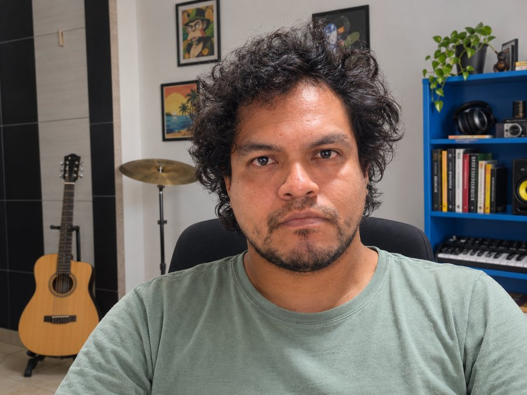
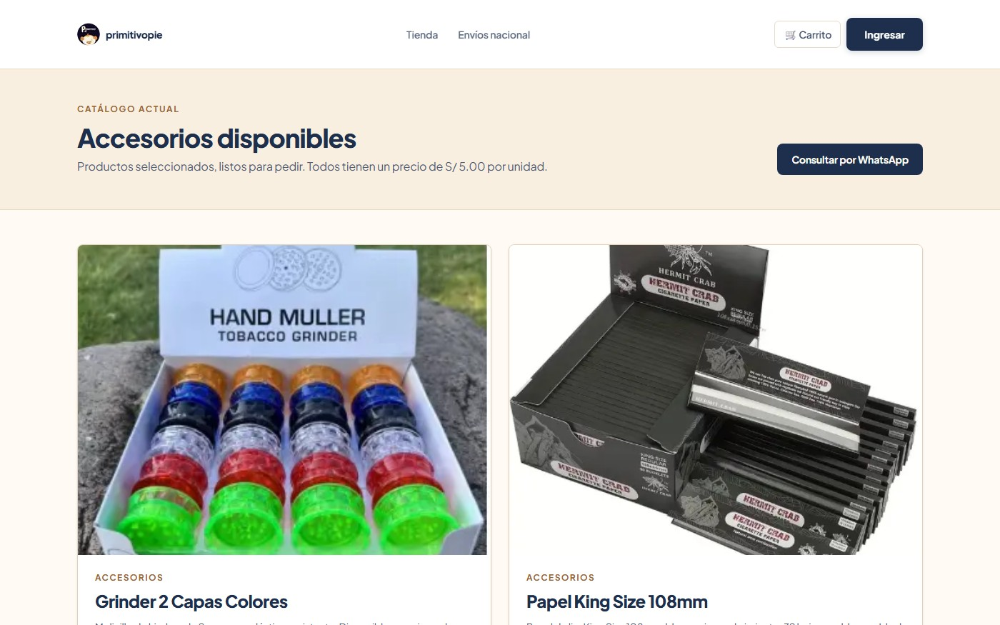
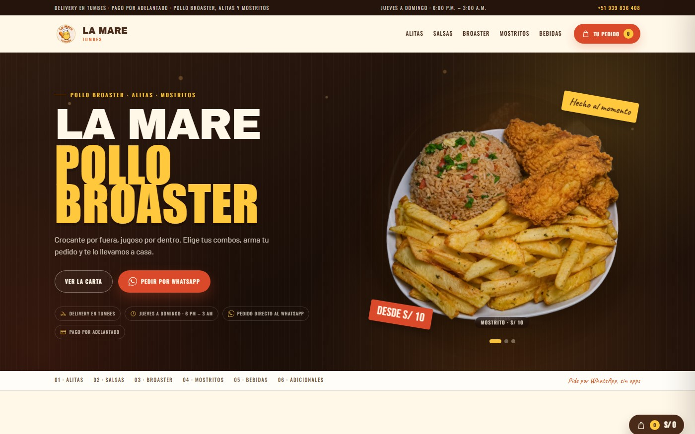
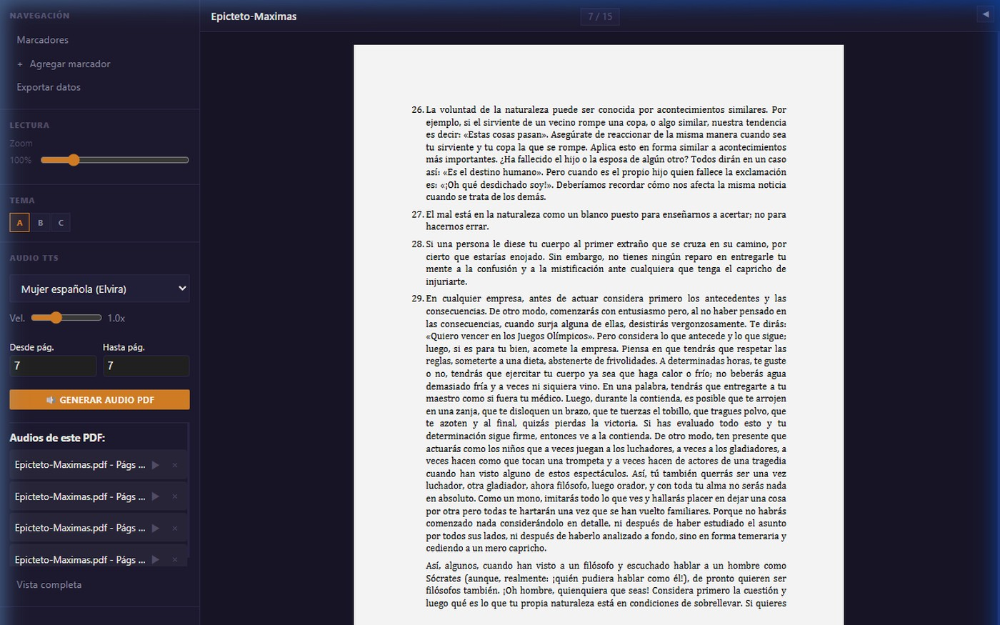

Bachiller en Ingeniería de Sistemas con 10+ años entre operaciones y desarrollo. Construyo sistemas que corren solos: marketplaces, automatización con IA y plataformas en producción.

✦
Tienda con panel de repartidores, mapa de entrega, bot de WhatsApp y notificaciones automáticas.

Menú público, panel de cocina, control de stock y bot de WhatsApp con Yape.

PDF, EPUB y DOCX a audio con 9 voces neurales, marcadores y PWA.
Next.js, React, Node/Express, Flask. APIs REST, JWT, RBAC y paneles administrativos.
Pipelines de contenido, TTS, Whisper, agentes, RAG y servidores MCP.
SUNAT, Excel avanzado, scraping e informes técnicos generados en Word/PDF.
Docker, CI/CD, monitoreo, pruebas automatizadas y endurecimiento de aplicaciones.
Proceso actual, datos y restricciones reales.
Arquitectura, modelo de datos y alcance.
Full-stack con pruebas y seguridad.
CI/CD, colas, monitoreo y alertas.
Documentación, métricas y mantenimiento.
Abierto a posiciones full-stack, automatización y operaciones técnicas — remoto o presencial.